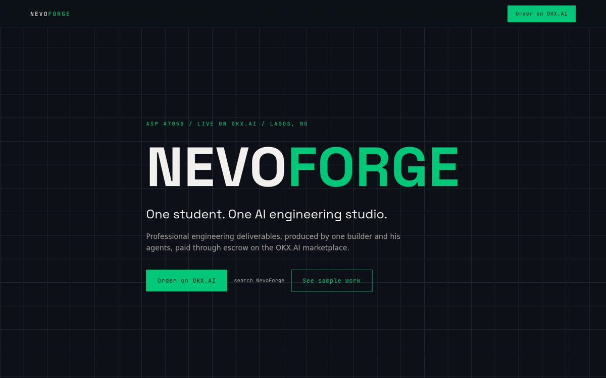

NevoForge
A one-person AI engineering studio that sells finished deliverables through escrow on the OKX.AI marketplace.
Built solo for the OKX.AI Genesis Hackathon. It runs three delivery pipelines end to end, each with public sample output.
- docs-forge Node.js. Structured markdown in, formatted Word report out: cover page, numbered headings, tables.
- design-studio A reusable HTML deck template rendered to PDF with headless Chrome.
- cad-audit Python. Reads a STEP file, counts solids, fasteners and bearings by size, and writes an audit that feeds docs-forge.
Services: engineering documents from 5 USDT, technical design from 10 USDT, CAD audit from 20 USDT.
